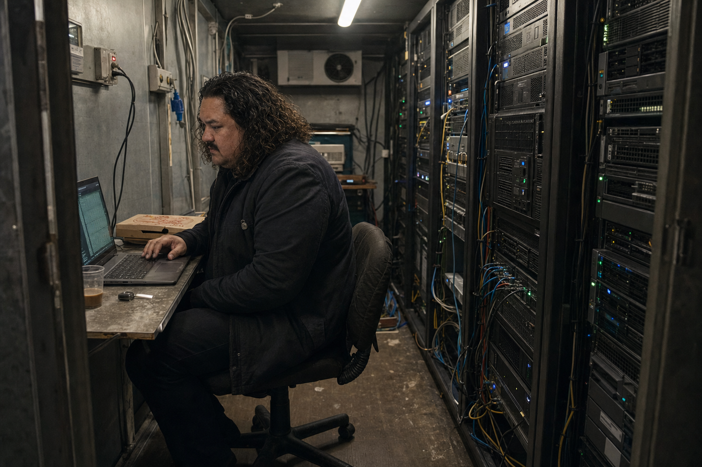
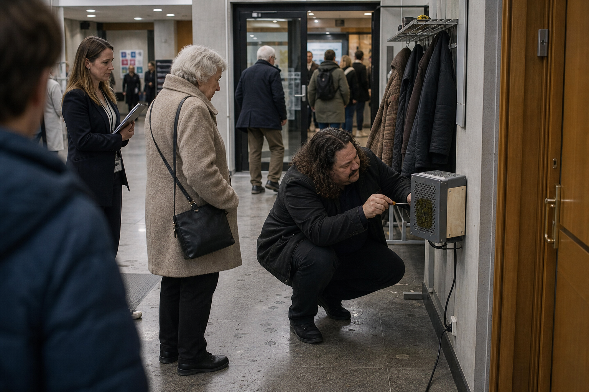
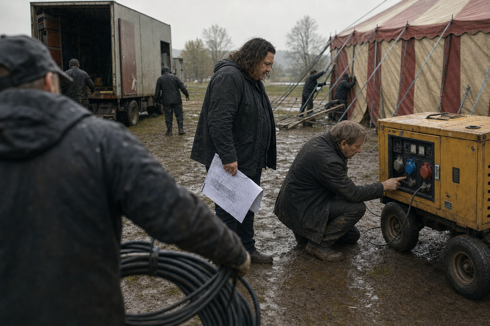
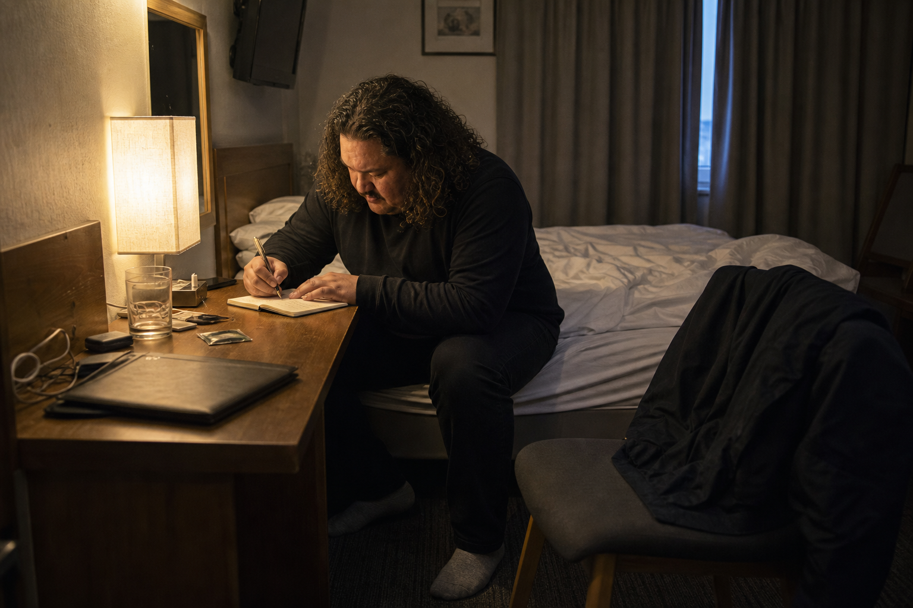
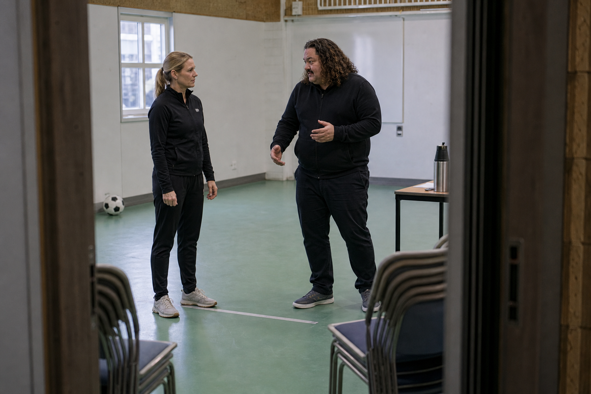
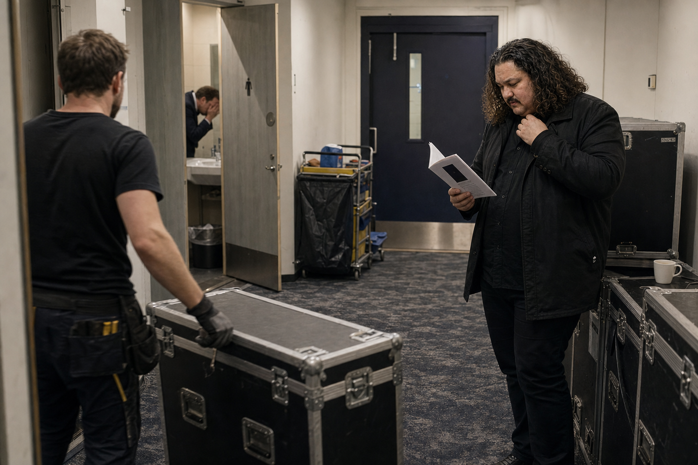
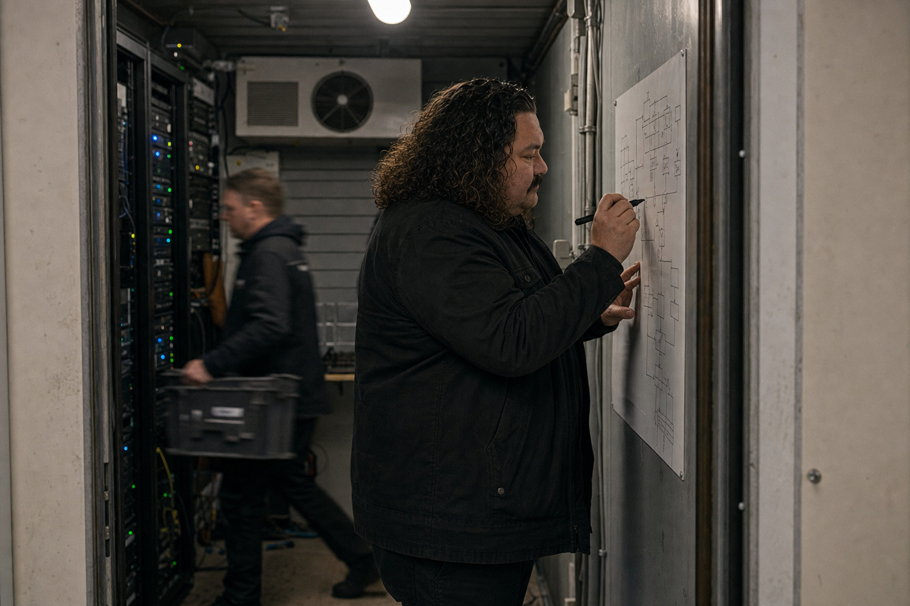
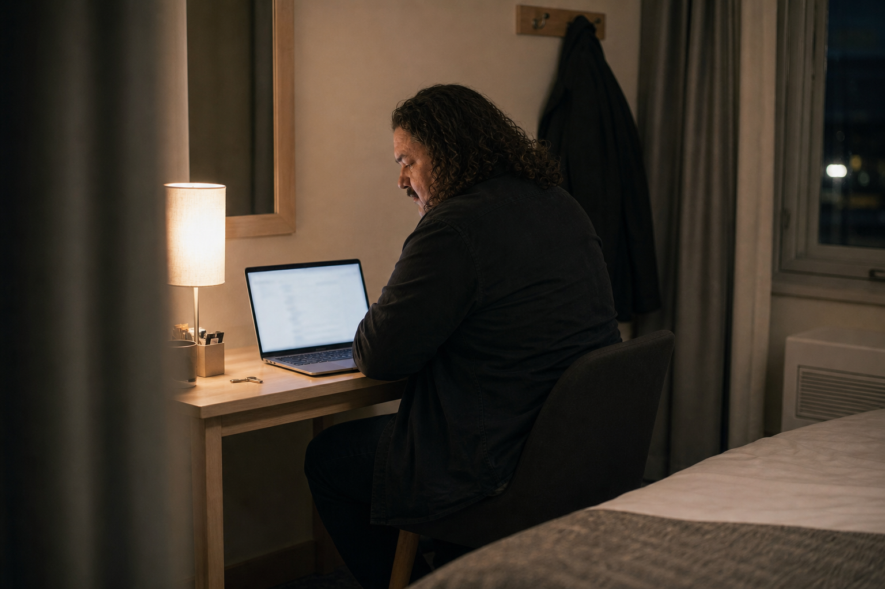

Bokkropp / Spräck Industries
Knäckt av Spräck
Hur en offentlighetsmaskin byggde en man, tappade honom och försökte fortsätta brinna utan namn.
Sjutton delar. En kropp.
Materialet publiceras som en sammanhållen läsordning: Datahall 07, Mossboxen, Booleanska Cirkusen, banketten och det namnlösa som fortsätter.
- 00Prolog - Datahall 07Barometern rör sig.
- 01MossboxenEn låda tar emot allt.
- 02Booleanska CirkusenFramtiden anländer i konvoj.
- 03Kläckt av SpräckEn bok blir temperatur.
- 04Trafikrapportens fyra formatFyra versioner. Fyra blindheter.
- 05Sista TurnénFarten hittar sitt tomrum.
- 06Kat Persson och 7.0-målvaktenRörelsen är inte poängen.
- 07Lillfrugan och pipelinenVerktyget börjar välja.
- 08Del I:s cliffhangerDiagnosen är inte ett svar.
- 09Succession genom grammatikPresens blir preteritum.
- 10ÖDESMOTOR byggsÖverhettningen får ett schema.
- 11ArtikelmotornTexten lämnar serverrummet.
- 12Del II:s cliffhangerLinjen får ingen etikett.
- 13BankettenKrigsråd vid dukat bord.
- 14Ghost EraNamnet blir mindre nödvändigt.
- 15JaktsondenFiendens spärrar blir bevis.
- 16BANKETT 013Det namnlösa håller.
Scener ur bokkroppen






